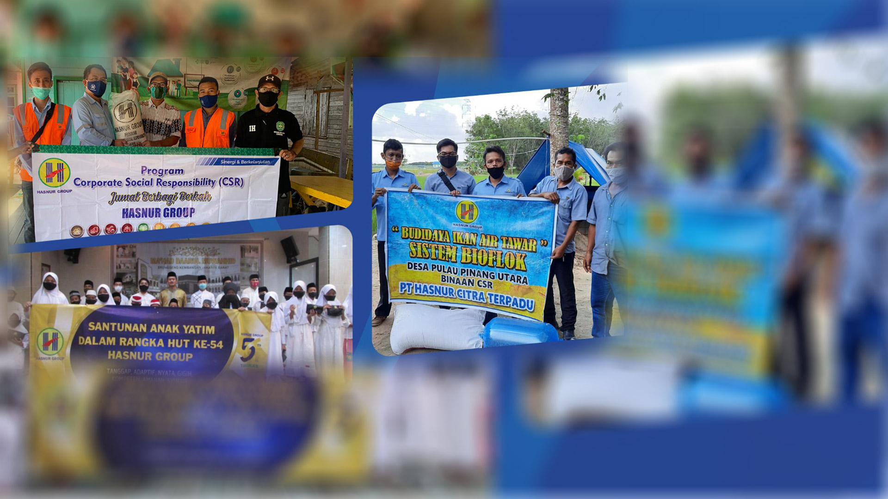
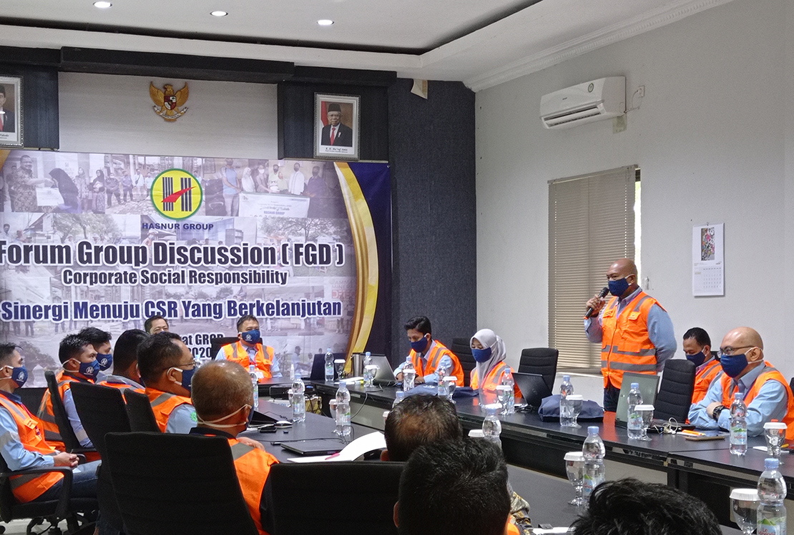

Overview
Hasnur Group's commitment to keep contributing to the communities and environment around its areas of operation.

OVERVIEW

As one of Indonesia's business players, Hasnur Group is committed to continuously contributing to sustainable development and to improving community welfare, particularly for the Banua people. This commitment aligns with Hasnur Group's motto, “Grow Together Develop The Future.” The motto reflects the aspiration of Hasnur Group's founders, the late H. Abdussamad Sulaiman HB and the late Hj. Nurhayati, that the businesses Hasnur Group runs must be able to build up the region and improve the welfare of its people, particularly in South Kalimantan and Central Kalimantan.
Hasnur Group's responsibility and concern for the community is channeled through its Corporate Social Responsibility (CSR) program, approached through Community Development (CD). Programs are created based on community needs and carried out by the community itself. In other words, the community is the most important actor in participating in and making the company's social programs succeed, while the company's role is limited to providing support and encouragement to the community in making those social programs a success.
Vision: Achieving harmony with stakeholders in improving community welfare and sustainable environmental preservation.
Mission: • Opening community access to the company's presence through various empowerment programs to develop human resources • Building synergy with stakeholders to improve community welfare in the fields of religion, economy, socio-culture, education, health, and sustainable environmental preservation • Encouraging cooperation with stakeholders to create sustainable harmony between human development and the environment • Strengthening the company's legitimacy and positive image through community care
Hasnur Group is committed to playing an active role in empowering communities to live better lives and in supporting government programs by driving development across several areas aligned with the SDGs (Sustainable Development Goals). The SDGs, comprising 17 Goals and 169 Targets, form a global action plan for the next 15 years (2016 to 2030) aimed at ending poverty, reducing inequality, and protecting the environment. The SDGs apply universally, so every country, developed nations included, carries a moral obligation to achieve the SDG Goals and Targets.
The noble aim of the SDGs is to achieve sustainable development for a better future, in line with the concept of CSR. Hasnur Group has developed a wide range of CSR program innovations for the benefit of the community, built on five pillars of development: the Economic Pillar, the Education Pillar, the Socio-Culture Pillar, the Health Pillar, and the Environment and Infrastructure Pillar, delivered through CSR programs together with its business entities.
The Economic Pillar is a CSR program focused on improving the economic standard of living of families within the ring-1 villages of Hasnur Group's business entities. According to South Kalimantan's Central Statistics Agency (BPS), as of March 2019 the number of people living in poverty in South Kalimantan stood at 192.48 thousand, a poverty rate of 4.55 percent, while Central Kalimantan stood at 134,594 people (4.98 percent). These figures serve as a reference for the company to remain aware of the socio-economic conditions of the surrounding community. Through the company's contributions to nearby communities, it is hoped that community welfare will rise, enabling them to meet their daily family needs, whether primary, secondary, or tertiary.
The Socio-Culture Pillar is a CSR program focused on preserving existing cultural values and local wisdom, safeguarding local customs and traditions, and protecting the historical heritage found within nearby communities. It should be noted that Hasnur Group's business entities live side by side with local communities from the Banjar and Dayak ethnic groups, both native to the provinces of South Kalimantan and Central Kalimantan, each carrying a diversity of values and culture relative to other ethnic groups. As an expression of care for the communities it lives alongside, Hasnur Group therefore develops CD programs centered on socio-cultural preservation.
The Education Pillar is a CSR program focused on raising education levels and the quality of human resources among local communities. South Kalimantan's Central Statistics Agency (BPS) records that the majority of South Kalimantan's population has completed junior secondary school (SMP), at a rate of 89.66%. While the company is not the primary actor in raising local education levels, it seeks to act as one of the government's stakeholders in doing so. With the company's continued support for education, it is hoped that the quality of Banua's human resources will keep improving and help advance the region.
The Environment Pillar is a CSR program focused on preserving environmental sustainability. The company recognizes that protecting the environment is a shared obligation, carried out in the hope of contributing to sustainable living for generations to come. Whether we realize it or not, it is future generations who will inherit and live in this environment, and so the obligation to keep it healthy and sustainable is meant to be felt by both the generation living today and generations yet to come.
The Health Pillar is a program focused on improving maternal and child health, as well as the health of communities around the company's areas of operation. Health, of course, is not the government's responsibility alone. In this regard, Hasnur Group continues to work together with the government, in this case the relevant Regional Government Work Units (SKPD), to address health issues so that communities can look forward to a healthy and decent life.